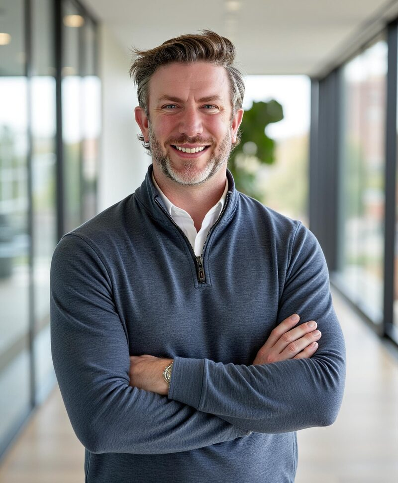

Listen before recommending
Show us how the work happens, including the workarounds. We want to hear from the people doing it before deciding what should change.
About Fresh Coast AI
AI changes how people work. It asks them to trust new tools, rethink familiar routines, and make room to learn. Fresh Coast AI brings that human work into the implementation from the start.

A note from the founder
For years I thought a transformation was something you got right and handed over. Build the right system, make the right plan, deliver it. My blind spot was doing the thinking alone and arriving with the answer. I have been the person who got the system right and watched it fail anyway.
Thirteen years brought me here, and not in a straight line. Work in Myanmar taught me how much depends on trust, patience, and reading what is not written down. Enterprise change management and AI adoption brought the same lesson into different rooms: people need a part in shaping the change they are being asked to make.
I founded Fresh Coast AI in September 2025 because every business deserves a partner who starts by listening. The technology matters. So does understanding what someone is worried about, what they know that you do not, and what will actually make their day better. That is the thinking behind how we work at FCAI.
Jon Linton
Founder, Fresh Coast AI
Working together
Show us how the work happens, including the workarounds. We want to hear from the people doing it before deciding what should change.
Your team helps shape the workflow, tries it on real tasks, and tells us where it falls short. Training is part of that work.
We explain the tradeoffs and the limits. If an existing tool or a simpler process is the better answer, that is what we recommend.
Experience behind the approach
Jon's background spans international business development, Fortune 500 change management, acquisition integration, and AI adoption. This experience informs FCAI's approach today.
For an example of FCAI's client work, see how Stanton & Company brought its client trackers into a weekly leadership digest.
Read the Stanton case studyStart a conversation
Tell us what is working, what is frustrating, and what you want to change. We can work out the next step together.